LL Buchanan Lake
Floating islands
Betty's Island - 4, a floating island....
The ongoing story of a floating island.
Back on Betty's Island page 3, we left the island in the summer of 2007, planted with grass and 32 trees, approved by the engineer and a dozen other job titles held by the island guy.
2008, May...
Well, it seems that the weights and measures engineer, and the soils and hydrology engineers might not have used the right conversion formula for the metric calculations. The bottom of the moist soil was sitting in the water about two fingers, and was supposed to stay that way, to keep the tree and grass roots watered. Well, who would have known that it would get hot and dry in Yakima Washington. So the soil dried out just enough for the island to get lighter, so it rose upward, about two fingers distance, just enough to separate the bottom of the soil from the water, so the soil then really dried out, to the extent of toast, so all but two of the trees were parched to the extent of crispy. Not bad. If we can maintain such sterling success, at two surviving trees per year in only 16 years the island will be a forest. How the two trees survived is known only to the fish. The grass under the anti-goose hardware cloth survived, and thrived with the goose fertilizer. The grass exposed to the grass-eating geese was reduced to its roots.
Now therefore, the re-engineering began.
First the island and waterfowl guy patiently waited for the Canadian goose nests on each of the three islands to hatch, and the goslings to paddle away with their parents. Then he towed Betty's Island to shore.
Floating Island Towing Rules:
1. Do not disconnect the island from the anchor cable before
you are ready to immediately tow, because a stiff wind may immediately
start, in the wrong direction.
2. Have a tow rope attachment centered behind the boat motor,
not held by somebody sitting in the middle of the boat, laughing.
3. Have a larger boat with a larger motor.
4. Failing the rules, have patience and a superlative sense of
humor.
Finally got the island to shore, against the wind, laughing.
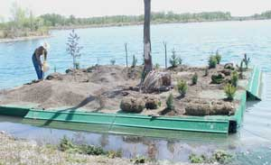
Straightened the osprey perch snag. Added a few more cubic yards of soil to put more weight on the island. Planted 30 more trees of various varieties of juniper, spruce, fir, cedar, pine, a couple giant sequoia, two Katsura trees and a Nanking Cherry of course. Oh, and a cluster of Serviceberries, or some foofoo shrub like that, by the goose nest. Added grass sod from the good folks at WestTurf in Yakima, and put protective screen over most of it to impede the eating habits of the geese.
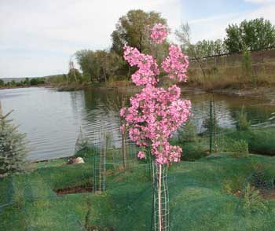
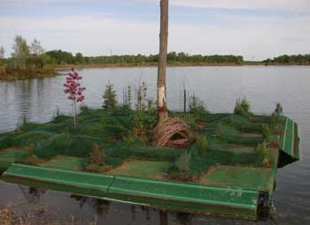
The surviving flowering crabapple from last year blossomed during the effort, and was beautiful.
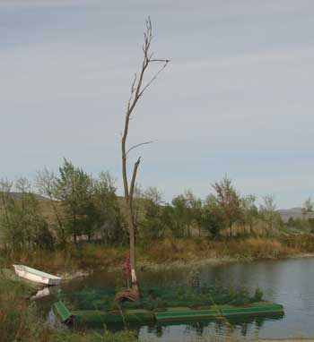
Tobi at Macy's in Yakima said that when people walk out of the store carrying a naked mannequin that stores sell on rare occasion, the people walking into the store always smile or laugh. I looked at the door, waited until nobody was coming in, and walked out of the store carrying a naked female mannequin the very moment that most of the world suddenly appeared at the door, looked at the mannequin, looked at me, smiled or laughed, and walked past turning to their friends with a new conversation that caused yet more laughter.
And therefore Betty was one process (of many) closer to sitting at her computer on Betty's Island. Trying to be economically frugal after learning the hard way how much work it is to make a mannequin from 2x4 boards, as shown on the Barney's Island web page, the best deal on a mannequin was not one in a sitting position working on a computer. So the torso with straight arms and no head or legs, turned out to be more work than making a mannequin with 2x4's. Sawing and duct-taping arms and hands, several times, to fit a computer keyboard was prior not on my list of skills. I found a hair stylist's mannequin head online, quite fortunately.
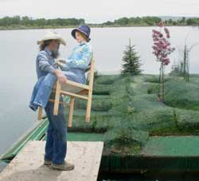
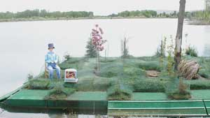
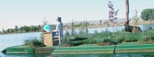
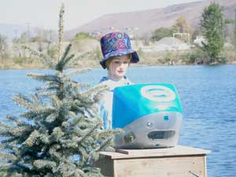
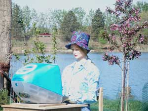
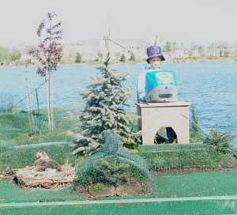
Yes, that is a resident domestic goose on her nest by Betty's desk. She patiently endured the upgrade project.
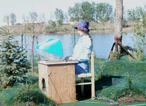
A well appointed duck nest was put under Betty's desk, in case an internet-savvy duck wants wifi for the ducklings.
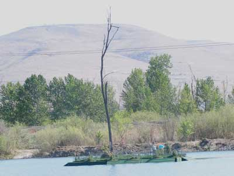
If you are driving by on I 82, and you notice Betty working at her computer on her island, she will be networking with international gravel and concrete market analysts in Dubai, who will be considering the construction project intelligence reports, and a few waterfowl habitat studies on gravel pit ponds, while Barney is still just goofing off, fishing, over on his nearby island, as usual.
EfCom, the cool Apple computer dealer in Yakima, set Betty up with an old style appearing iMac stuffed with all the latest high tech linked to the center of the Galaxy and beyond. Might be a few inter-galactic games on there too, for when business gets boring. Well, with an island of her own, Betty is her own boss. Oh, there might also be a small bird nest in the computer, just in case a computer-savvy warbler shows up.
July report: The island level in the water is maintaining tree root contact with water. Trees doing well. The island popularity with the geese has facilitated heavy goose fertilizer which obscures the green color of the screen-protected grass a bit. It will take a couple years for the trees to get big enough to make the island look green all the time.
Next report on the Betty's Island -5 page.
Betty's Island-1
Betty's Island-2
Betty's Island-3
Betty's Island-5
Betty's Island-6
Barney's Island
Pebbles Island
Aerial Photos
Neighbors
History
Swans
Birds
Trees
Trees-2
Trees-3
Lake
Links